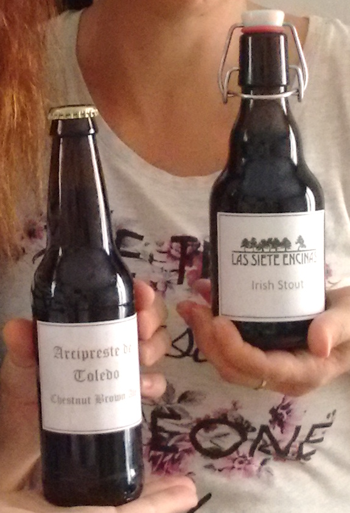
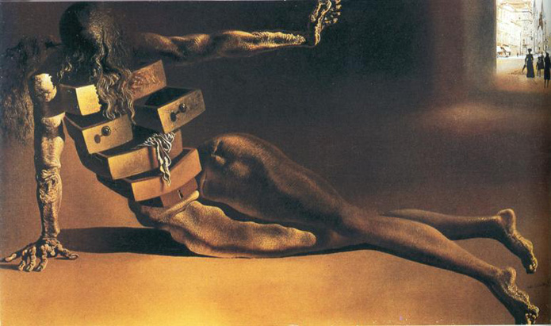
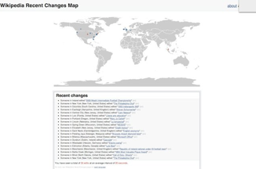
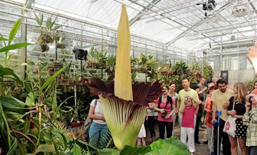
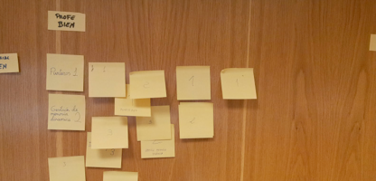

La sana curiosidad
Table of Contents

La sana curiosidad
En este blog incluyo curiosidades que me encuentro en el día a día. Espero que os resulten interesantes.
Cerveza artesana
El año pasado me regalaron un kit para hacer cerveza de manera artesanal. Lo cierto es que me hizo mucha ilusión, ya que si bien no soy un gran bebedor de cerveza, si es cierto que me gusta; pero sobre todo, me llamaba la atención conocer la manera en que se producía la cerveza (igual que casi cualquier otra cosa). Mi curiosidad, de nuevo.
El kit se componía de dos cajas. En una venían las botellas vacías, una docena, donde habría de embotellarse la cerveza una vez producida. Venían acompañadas de unos tapones de esos de aire retro que se sujetan al cuello de la botella por unos gruesos alambres y que consisten en un tapón cerámico con un aro de goma rojo. Valga decir, para aquellos que tengan ya cierta edad, que era como los tapones de la gaseosa de hace 40 años.
En la otra caja venía el kit de producción propiamente dicho. Para el tipo de cerveza que se produciría con este kit (Irish Stout) los ingredientes eran una bolsa de maltas tostadas, un par de sobre de lúpulos, al vacío, y un sobrecito de levadura. Venían estos componentes acompañados por un botellón enorme, estilo matraz, donde se produciría la fermentación, y una serie de elementos adicionales, como un tapón multicomponente, una goma, un tubo, y otras cosas más pequeñas.
El problema era que nunca encontraba el momento para hacerlo. Y así, ocurrió que los consumibles me caducaron antes de realizar el ejercicio de la producción cervecera. Mal por mí.
Afortunadamente, hace un par de meses me dijo mi amigo Fernando que le habían regalado un kit similar. Así que nos apañamos para quedar en su casa ha intentar la producción de nuestros galones de cerveza.
Esto ocurrió hace dos semanas. Durante estos últimos quince días, la cerveza ha estado fermentando en su matraz, y los restos de malta se han ido sedimentando. Hasta ayer, día en que trasvasamos la cerveza, eliminando los posos, añadiéndoles un punto de miel para que la fermentación se acelerase y se generase más gas, y procediendo a su embotellado.
Como fin de fiesta, mi amigo había hecho unas pegatinas para que pudiesemos hacer lo que el denominó "intercambio de banderines". En la imagen puede verse el resultado final. En dos semanas, probaremos el resultado, y actualizaremos este post.

Países donde he estado
Países donde he estado
Algo que ya conocía: una página web donde puedes marcar los países en los que uno ha estado, y que dibuja un mapamundi coloreando esos países. Cortesía de BigHugeLabs.com.
Realmente he estado en pocos lugares del mundo. Quizá haya que comenzar a plantearnos hacer un viajecito al extranjero de vez en cuando…
Creo que mi cerebro está muerto

Hace poco he leído algo acerca de lo que se denomina el síndrome de Cotard: la impresión absolutamente irracional de que el cerebro propio está muerto. Este mal, que parece estar relacionado con terribles formas de depresión profunda, resulta ser en la actualidad extraordinariamente raro en su profusión.
El artículo que leí relataba el caso de una persona a la que se había entrevistado, y que había sufrido esta enfermedad. Su testimonio es terrible: “No tenía sentido tomarse las cápsulas que el hospital me suministraba, dado no iban a hacerme ningún bien, puesto que mi cerebro estaba muerto. Perdí el sentido del olfato y del gusto. No necesitaba comer, ni hablar, ni hacer ninguna otra cosa. Acabé por pasar el tiempo en los cementerios, ya que era el lugar donde podía encontrarme más cerca de la muerte.”
Este caso, que los médicos han calificado de extraordinario, continúa siendo un enigma. Por ejemplo, las piernas del paciente, un hombre, estaban anteriormente llenas de pelo, pero éste desapareció al caer el paciente enfermo. Otra cosa que detectaron los médicos, y que podría estar directamente relacionado con la aparición del síndrome de Cotard, es el bajísimo nivel metabólico encontrado en pruebas PET (positron emission tomography) relizadas en los lóbulos frontal y parietal del cerebro, en areas relacionadas con el “Yo” y el pensamiento sobre uno mismo. Los niveles metabólicos encontrados eran compatibles con una persona en estado vegetativo.
Los que sufren esta enfermedad suelen morir de inanición, dado que piensan que no necesitan comer, respirar, etc. El sujeto del artículo en cuestión fue bien cuidado por familiares y amigos, y mediante medicamentos ha conseguido una gran autonomía en su vida. Y ya no cree que su cerebro ni ninguna otra parte de su ser está muerto. Aunque aún se siente algo extraño.
(Ver artículo en New Scientist, Mindscapes: First interview with a dead man).
El latir de la Sociedad Global en directo, a través de Wikipedia

Hoy me he encontrado con algo que me ha parecido terrible y bello a la vez: una visualización de las ediciones que se van realizando en las páginas de la Wikipedia, en todo el mundo, prácticamente en vivo y en directo. La página, llamada Hatnote Wikipedia Recent Changes Map, va mostrando, a intervalos de segundos, la localización aproximada de las personas que en esos momentos han editado una página de la Wikipedia (y, ya de paso, te dice qué página han modificado).
A mí me ha parecido, sinceramente, una visión de la Sociedad Global en su estado puro.
El retorno del geocentrismo
Leo en el ABC que “un profesor de la Universidad del País Vasco y un doctor por la de Murcia aseguran en un libro que nuestro planeta no se mueve y que es el Sol el que gira a su alrededor” (ver en este enlace). Estos dos caballeros afirman que la Tierra es el centro del Universo.
Según la noticia, “el físico Juan Carlos Gorostizaga, profesor de matemáticas aplicadas en la Escuela Técnica Superior de Náutica y Máquinas Navales de la Universidad del País Vasco (UPV), y Milenko Bernadic, doctor en Matemáticas por la Universidad de Murcia y actualmente profesor de Secundaria, han escrito un libro llamado «Sin embargo no se mueve», en el que desechan cientos de años de acumulación de conocimientos astronómicos y científicos y afirman, sencillamente, que la Tierra es el centro del Universo”. Según los autores del libro, el libro está indicado especialmente para “católicos con buena formación en ciencias”.
Solamente se me ocurre decir que podía ser peor: podían afirmar que la Tierra es plana (como, por cierto, asegura aún un porcentaje significativo de la población de Estados Unidos). O peor todavía, que en realidad la Tierra es una esfera hueca y vivimos en su superficie interior.
En fin, vaya tela…
Atmorphophallus titanum

El aro gigante, o bunga bangkai, que en indonesio quiere decir “flor cadaver”, es la flor más grande y apestosa del mundo. Debe su nombre indonesio a su característico aroma a carne putrefacta. Su nombre científico, Amorphophallus titanum, quiere decir literalmente “falo gigante deforme”. Dicho nombre viene de su forma alargada.
Esta curiosa flor es siempre noticia. Mejor dicho, es noticia siempre que florece, ya que puede tardar hasta quince años en florecer; la flor, de hasta tres metros de altura, en cambio, durará solamente unos pocos días.
Claro, que con su fétido olor no apetece estar mucho tiempo contemplándola de cerca.
De cursos y post-its

Hace poco he tenido que impartir de nuevo un curso cuya convocatoria suele ser más o menos anual. Se trata de un curso eminentemente técnico, y que pretende ser todo lo práctico que sea posible. Es un curso avanzado de C, el lenguaje de programación, en el cual, además, hago hincapié en programación concurrente, comunicación entre procesos, y cosas de este pelaje. Pero estoy divagando…
El caso es que tradicionalmente, tras el curso, se pasaba a los alumnos un formulario que debían cumplimentar, para evaluar tanto los contenidos del curso, como su idoneidad, y la capacidad del formador. Rellenar este formulario era necesario… pero en la práctica solamente uno de cada tres asistentes lo hacía, y tarde. Parte de la responsabilidad podíamos achacarla al momento en que se distribuía el formulario entre los asistentes: normalmente, meses después del proceso formativo, lo que hacía que la mayoría apenas recordase nada del curso ni de sus contenidos o la destreza formativa del profesor. Esto, unido con la constatación de que se hace antes lo urgente que lo importante, nos daba ese 30% de formularios contestados.
Por si fuera poco, esta información no solía distribuirse a los profesores; sólo si era solicitada de manera expresa se distribuían los datos recopilados (protegidos por el debido anonimato, por supuesto).
Como a mí me interesa saber cuanto antes cómo de bien es el material que preparo, y qué tal son mis exposiciones, esta convocatoria se me ha ocurrido usar el método del "panel de post-its". En la pared, cerca de la puerta de salida, disponía dos postits acotando un segmento de una línea horizontal imaginario, donde aparecían las palabras "Profesor mal" y "Profesor bien"; y otros dos acotando un segmento de línea vertical imaginario, con las palabras "Material mal" y "Material bien". de manera que uno de los extremos del segmento horizontal (el eje "Profe"), coincidiese con uno de los extremos del segmento vertical (o eje "Material"). En el extremo coincidente aparecían los post-its "Profe bien" y "Material bien". Al inicio del curso distribuí entre los alumnos un paquetito de post-its, y les expliqué la dinámica a seguir. Al finalizar la clase diaria, habrían de tomar un post-it por cada capítulo del curso tratado ese día, debían escribir el número de ese capítulo en un post-it, y pegarlo en el sistema de coordenadas definido por los ejes "Profe" y "Material", tanto más cerca de los extremos "bien" o "mal", cuanto mejor o peor hubiesen sido el tratamiento dado por el profesor y los materiales (presentación, textos y ejemplos) para ese capítulo. Y así con todos.
De esta forma, al terminar cada día de curso, obtenía una evaluación de grano fino (al nivel de capítulo del curso) tanto de mi exposición como de los materiales del curso. Con hacer una foto con el móvil al panel de la pared, ya tenía la evaluación generada para ese día por mis alumnos.
Al principio les resultó divertido lo que les conté, especialmente cuando pegué en la pared los post-its que representaban los extremos de los ejes; pero pronto se habituaron a ello. Y, la verdad, estoy muy contento con los resultados. El único problema creo que ha venido de que los post-its que distribuí eran un poco grandes, y en varias ocasiones varias personas han querido poner un post-it exactamente donde otra persona lo había puesto antes; y por no pegarlo encima, lo han puesto a un lado, o arriba, o abajo, falseando ligeramente su criterio. En fin, poco a poco iré perfeccionando el sistema.